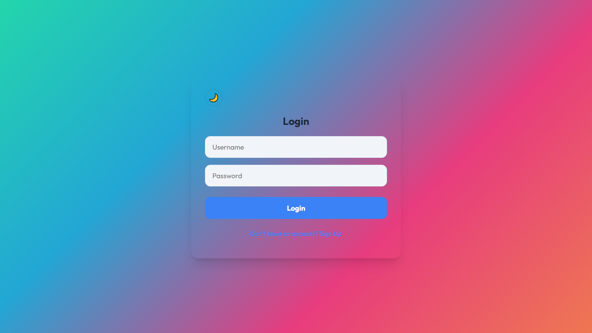

Figure 6.2 - Real-Time Seat Selection Grid
A MINOR PROJECT REPORT ON
Submitted by:
This is to certify that the minor project report entitled "Smart Transit: Real-Time Bus Tracking & Booking System" is a bonafide record of the work done by Aslam Jan V P, Malavika P V, and Pranav K during the academic year 2025-26, in partial fulfillment of the requirements for the award of the Diploma in Computer Engineering from Govt. Polytechnic College, Mananthavady.
I express my sincere gratitude and thanks to Mr. Biju M J, Principal Govt. Polytechnic College, Mananthavady and Mr. Karunakaran V N, Head of the Computer Engineering Department for providing necessary facilities and their encouragement and support during the course of this project.
I owe special thanks to the project guide Ms. Remitha N V, Lecturer in Computer Engineering, project coordinators Mr. Amal Wilson and Ms. Aiswarya M, Lecturers in Computer Engineering for their corrections, suggestions and sincere efforts to co-ordinate the project under a tight schedule.
I express my sincere thanks to all staff members in the Department of Computer Engineering who have taken sincere efforts in guiding and correcting me in conducting this project.
Next, I would like to acknowledge the heartfelt efforts, comments, criticisms, co-operation and tremendous support given to me by my dear friends during the project activities.
Finally, I wish to thank my family and friends for their unwavering support and motivation, which kept me focused and driven to complete this report.
Smart Transit is an integrated web-based platform designed to resolve the recurring challenges in public and private bus transportation systems. Traditional bus services suffer from fragmented tracking solutions where commuters must rely on multiple applications to track real-time bus locations and reserve seats. Furthermore, operators lack centralized digital dashboards to efficiently manage their fleet and daily passenger logistics.
This project introduces a unified solution by leveraging modern web technologies including React.js, Node.js, MongoDB, and WebSockets (Socket.io). The developed system features a real-time interactive coordinate tracking map powered by Leaflet.js, an automated seat-selection matrix reflecting live status, dynamic QR-code ticket generation, and a fully functional unified administrative interface. By consolidating these services into a single platform, Smart Transit substantially reduces passenger friction, simplifies ticketing, and modernizes transit fleet management, offering a highly responsive, glassmorphism-themed, dual-mode (light/dark) web application.
Smart Transit is a comprehensive web interface intended to revolutionize the way commuters interact with public and private buses. It acts as an all-in-one digital transit hub where users can observe the live geographical coordinates of active buses running on precise routes, reserve physical seating through an interactive matrix layout, and instantly procure scannable digital tickets formatted as QR Codes.
Currently, transit commuters face daily anxiety regarding the uncertainty of bus arrivals and the frustrating necessity to wait in physical queues for ticketing. Although basic tracking implementations like Google Maps Transit exist, they do not facilitate direct booking. Furthermore, state-run services (e.g., KSRTC) and private tour operators manage highly segregated digital ecosystems. The lack of an aggregated tracking-booking platform causes user friction, which inspired the development of a unified transit platform.
The core problem resides in the fragmentation of the transit domain: users are forced to juggle multiple disjointed applications to secure a seat and track its transport vehicle. There is a marked absence of visual real-time seat tracking—once a seat is booked via physical means, mobile apps do not reflect this instantly layout-wise. Fleet managers similarly lack a rapid, centralized digital tool combining both user session data and geographic fleet monitoring under one manageable umbrella.
We utilized a MERN-stack methodology customized with WebSockets. React.js served as our frontend interface engine prioritizing dynamic component states, whereas Node.js coupled with Express.js constituted the RESTful backbone. MongoDB was selected for its NoSQL flexibility in scaling JSON-based transit data. Real-time bi-directional geographic data pipelining was accomplished using Socket.io to prevent the latency typical of repeated HTTP-polling architectures.
This report is structured hierarchically. Chapter 2 outlines hardware, software, and functional requisites. Chapter 3 examines the systemic and database architecture alongside UI mockups. Chapter 4 dives deep into precise code module configurations and algorithmic explanations. Finally, Chapters 5 through 7 handle testing, conclusive analysis, screenshots, and prospective expansions of the project scope.
Requirements were sourced through iterative analyses of the shortfalls present within existing transit applications such as RedBus and local government transit apps. Stakeholder perspectives (Commuters and Fleet Managers) were analyzed to formulate precise functional constraints.
As a web-based application, end-user hardware specifications are minimal:
The system must securely process user registrations and login validations, distinguishing standard commuters from systemic administrators.
The system must project dynamic Latitude/Longitude coordinates onto a visual map UI and update them concurrently worldwide for active viewers.
The system must generate visual layouts differentiating available, selected, and occupied seats, instantly locking down finalized bookings from other clients.
Mapping marker positions must correlate to server-state arrays within a 3-second update window ensuring real-time reliability.
The CSS environment must adjust gracefully to mobile viewports matching the visual experience executed on larger resolution desktops.
The solution deploys a standard 3-tier monolithic architectural subset bridging Client, Server, and Database hierarchies. The Client triggers REST API executions ensuring authentication while perpetually subscribing to the Web Socket server instance (Node.js/Socket.io). The Node.js server maintains strict object-mapping methodologies interacting directly via Mongoose towards the MongoDB unstructured JSON clusters.
The schema focuses on document decoupling to optimize rapid reads requested by Socket streams.
| Collection Name | Primary Keys / Properties | Purpose |
|---|---|---|
| Users | username, password, isAdmin, bookings (Array) |
Stores credentials, privilege flags, and an embedded array resolving history of generated QR tickets. |
| Buses | busId, name, lat, lng, seats (2D Array) |
Tracks temporal coordinates and a multidimensional boolean array representing real-time matrix occupancy. |
The Graphical Interface commits heavily to modern 'Glassmorphism' — employing backdrop CSS filters to simulate frosted glass against vivid animated gradients. Elements follow strict dual-theme CSS variables ensuring seamless transitions between Light mode (daytime readability) and Dark mode (nighttime visual preservation), an aesthetic specifically programmed into the Leaflet tile layers rendering the geographic maps.
Authentication Module (Backend): Intercepts frontend login and register event emissions, validating inputs against MongoDB hashes, emitting authorized tokens or denying entry explicitly via auth_error strings.
Map Engine (Frontend): Instantiates a MapContainer consuming open-source mapping tiles, iterating through incoming Socket arrays to re-render Marker components continuously.
Admin Controls (React): A floating contextual interface hidden by default unless the authorized session flag (isAdmin=true) is satisfied, manipulating both the User List states and Route Management inputs.
Real-Time Simulation Algorithm: Instead of hardware IoT modules, the server executes a cyclic 3000ms setInterval routine querying all initialized buses, applying fractional randomized floating-point additions to existing lat/lng attributes, invoking bus.save(), and firing an instantaneous io.emit() broadcast to force client re-renders.
The primary technical hurdle involved managing React component lifecycle renders triggered by rapid Socket emission floods. Unoptimized, the map view would forcefully zoom out or stutter every 3 seconds. To circumvent memory leakage and frame-drops, state management was refined enforcing shallow map updates without destroying the primary Map instance boundaries.
Key verification workflows prioritized testing concurrent users attempting identical seat reservations, assuring socket resilience under simulated load, and verifying QR ticket render consistency across variable screen ratios.
| No. | Input / Action | Expected Result | Actual Result | Pass/Fail |
|---|---|---|---|---|
| 1 | Login with invalid password | UI triggers red error feedback alert. | Alert triggers successfully without crashing. | Pass |
| 2 | User 1 & User 2 book Seat 12A simultaneously. | First-in confirms, second user is rejected/disabled. | Seat locks visually on User 2's screen instantly. | Pass |
| 3 | Admin disables bus route. | Bus instantly vanishes from public tracking array. | Bus removed from clients without page refresh. | Pass |
The system completely fulfills the core objectives designated in Chapter 1. The Socket arrays remain synchronous beneath multi-tab simulated user loads, confirming robust bidirectional web interactions capable of replacing disjointed legacy systems.
The following figures demonstrate the expected output of the Smart Transit system, including the main interface and real-time operations.

Socket-based payload updates achieved sub-50ms data transmission over standard localhost/LAN configurations. The utilization of NoSQL formatting decreased JSON payload sizes permitting high-throughput marker refreshes without exceeding browser RAM limits or enforcing document re-paints affecting framerate.
When evaluated against contemporary tools like RedBus, Smart Transit demonstrated superior transparency by merging positional map data alongside the e-commerce component (seat purchasing), an overlap historically ignored by major booking applications relying solely on estimated-time-of-arrival logic algorithms.
The immediate limitation is the lack of physical hardware GPS sensor integration; locational data currently relies on server-simulated roaming loops. Additionally, the platform lacks integration with centralized payment gateways (e.g. RazorPay) required for commercial production deployment.
The development of the Smart Transit framework effectively demonstrates the viability of unifying isolated transit architectures (fleet tracking, consumer booking, admin logistics) into one cohesive, low-latency web dashboard. The project proves that leveraging real-time technologies like Node.js WebSockets significantly augments user confidence by eliminating tracking ambiguities.
Future evolutionary paths include swapping the backend simulation routines for direct REST ingestion from IoT physical cellular trackers mounted directly on transportation assets. Secondary phased improvements will integrate automated localized bus route timetables parsed against live delays, the immediate bridging of secure RazorPay APIs for ticket purchases, and compiling the React codebase into a native Android application using React-Native methodologies.
Installation Steps:
1. Open OS terminal and clone repository using git clone https://github.com/Pumpkaboo123/bus.git.
2. Enter the backend directory (cd backend) and run npm install followed by npm start to ignite server-side functions.
3. Access a secondary terminal window navigating to the frontend (cd frontend).
4. Install dependencies (npm install) and initialize the local server (npm start) launching the web portal.
Application Navigation:
Administrators log in utilizing predefined credentials (admin / admin123). By clicking the floating icon positioned bottom-right, the configuration menu launches allowing instant modifications to current routes and passenger restrictions.